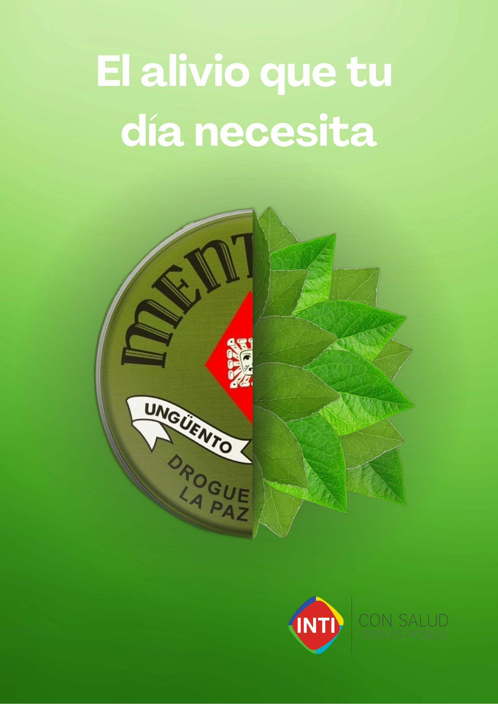
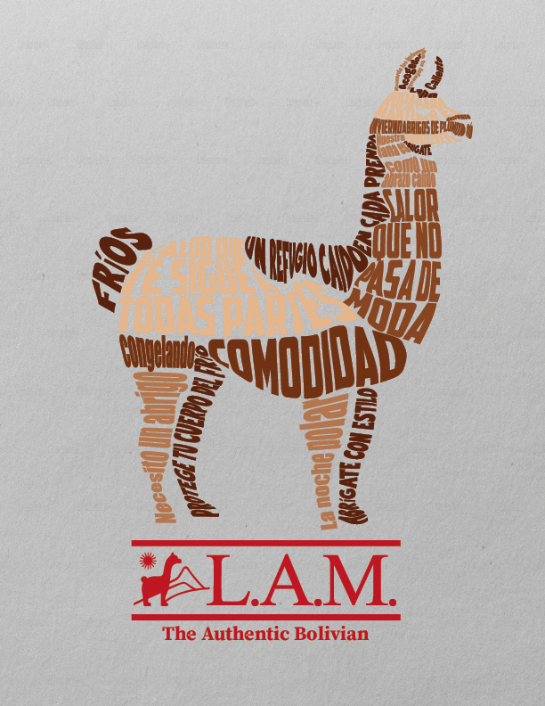

Montaje Publicitarios

Descripcion: Muestra una barra de chocolate diseñada para parecer una puerta, con un fruto seco haciendo las veces de picaporte. La frase "LA PUERTA DE LA FELICIDAD" refuerza esta idea, sugiriendo que comer el chocolate es el camino para encontrar la alegría. Además, el diseño incluye chocolate derretido y el logo de la marca, que destaca su origen boliviano y su tradición desde 1977.
INTI

Descripcion: El cartel utiliza una imagen dividida: la mitad izquierda muestra la lata del producto y la derecha, hojas frescas, simbolizando la unión entre el ungüento y sus ingredientes naturales. La frase "El alivio que tu día necesita" promete un beneficio inmediato, mientras que el logo y el lema "CON SALUD TODO ES POSIBLE" refuerzan la identidad de la marca como proveedora de bienestar y salud.
Conservación Amazónica

Descripcion: La imagen usa un fuerte contraste para transmitir su mensaje: un árbol verde y sano crece dentro de una bombilla, que simboliza una idea, y se encuentra sobre el paisaje desolador de un bosque quemado.
L.A.M.

Descripcion: vende prendas de vestir de lana de alpaca. La silueta de la llama, un animal originario de la región andina y reconocido por la calidad de su lana, está formada por palabras en español que resaltan los beneficios de los productos de la marca.